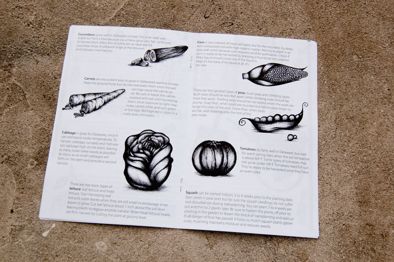
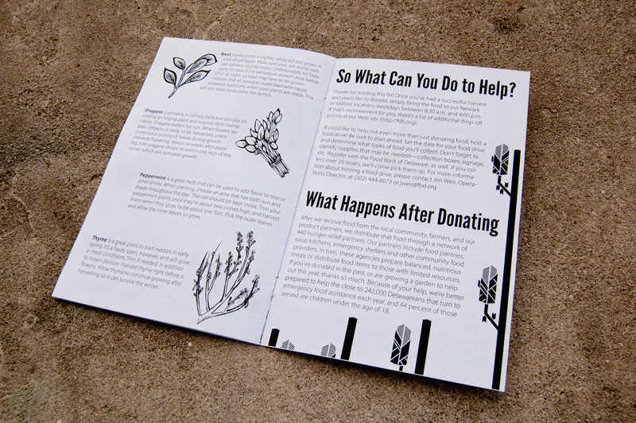
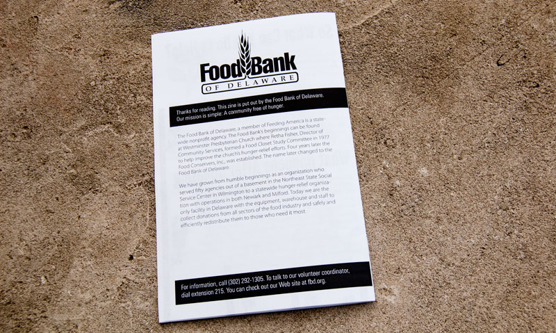
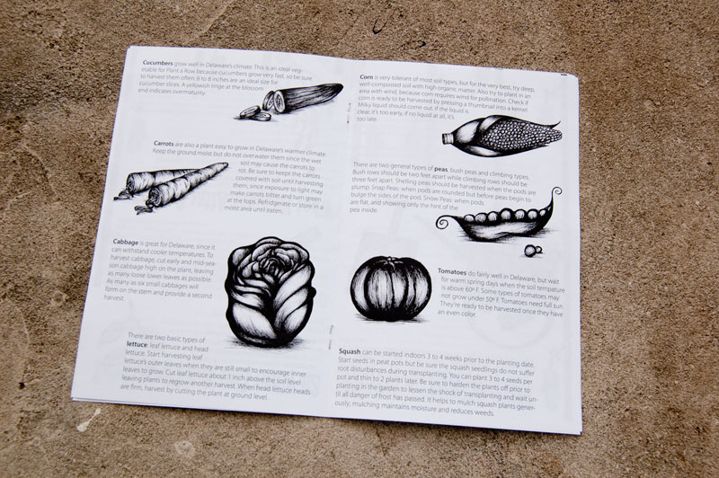
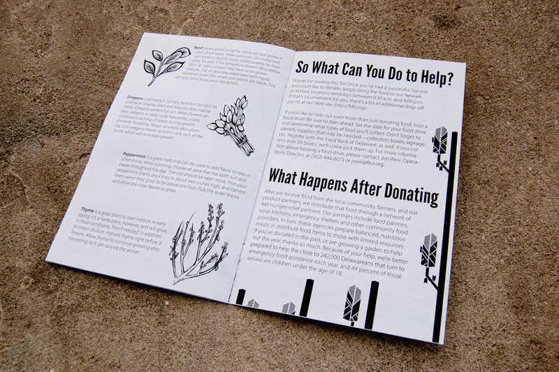
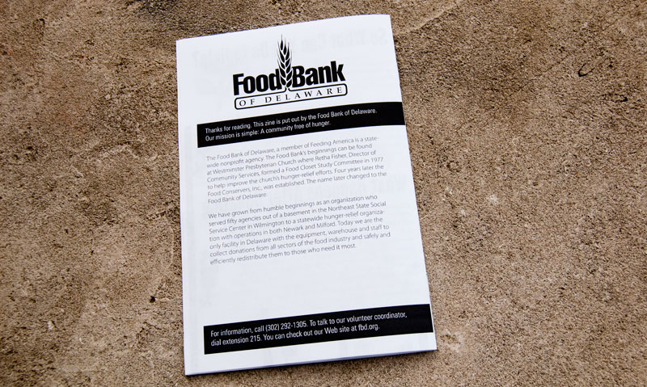

Food Bank of Delaware Zine
Adobe Illustrator & InDesign
Plant a Row encourages farmers and gardeners to plant an extra row in their gardens and donate the food to the Food Bank of Delaware (the client). The brief was focused toward a garden center audience. I decided a good solution for this audience would be a small book, or zine, they could pick up and check out. Since the Food Bank is a non-profit and doesn’t have much money to get the word out about what they do, I decided that the zine should be very graphic and purely black and white. This way, they could easily reproduce it with a photocopier.
I began to write and sketch ideas for the zine, collecting the info I knew about the Food Bank. This led me to creating covers that would grab attention in garden centers. Because it was black and white I knew it would stand out, but I wanted text and imagery that would make people curious, and hopefully take it with them. I also decided that the size of the zine should be fairly easy to reproduce, so I began to design a book that could be created by folding a 8.5”x11” paper in half. This would make it easily reproducible, as well as photocopyable.
I eventually settled on the idea of “how to grow outstanding vegetables,” but I was sure to make note on the cover that it wasn’t just about growing. It was about donating too. The zine has few pages explaining what Plant a Row is with the rest is about how to grow great plants. I decided to make half the pages about the plants and half about the Food Bank of Delaware.
Because the zine was meant to be very graphic, I used Illustrator to make some very contrasted illustrations out of my initial sketches. Katy Orr created the illustrations for the plant pages (pages 4, 5, and 6). Using copy from the Food Bank website, I wrote my own. I found gardening tips for vegetables and herbs online as well.

 




